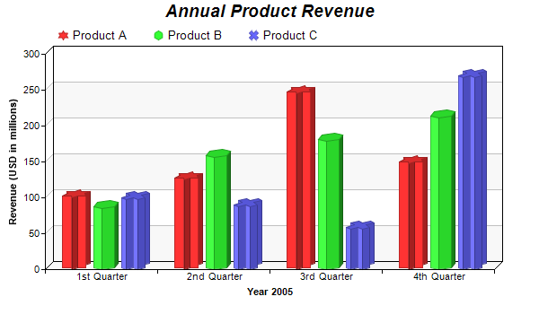

This example demonstrates a multi-bar chart in which each data set has a different bar shape.
The bar shapes are specified using
BarLayer.setBarShape. See
Shape Specification on how built-in and custom shapes are defined in ChartDirector.
The following is the command line version of the code in "cppdemo/multishapebar". The MFC version of the code is in "mfcdemo/mfcdemo". The Qt Widgets version of the code is in "qtdemo/qtdemo". The QML/Qt Quick version of the code is in "qmldemo/qmldemo".
#include "chartdir.h"
int main(int argc, char *argv[])
{
// The data for the bar chart
double data0[] = {100, 125, 245, 147};
const int data0_size = (int)(sizeof(data0)/sizeof(*data0));
double data1[] = {85, 156, 179, 211};
const int data1_size = (int)(sizeof(data1)/sizeof(*data1));
double data2[] = {97, 87, 56, 267};
const int data2_size = (int)(sizeof(data2)/sizeof(*data2));
const char* labels[] = {"1st Quarter", "2nd Quarter", "3rd Quarter", "4th Quarter"};
const int labels_size = (int)(sizeof(labels)/sizeof(*labels));
// Create a XYChart object of size 600 x 350 pixels
XYChart* c = new XYChart(600, 350);
// Add a title to the chart using 14pt Arial Bold Italic font
c->addTitle("Annual Product Revenue", "Arial Bold Italic", 14);
// Set the plot area at (50, 60) and of size 500 x 240. Use two alternative background colors
// (f8f8f8 and ffffff)
c->setPlotArea(50, 60, 500, 240, 0xf8f8f8, 0xffffff);
// Add a legend box at (55, 22) using horizontal layout, with transparent background
c->addLegend(55, 22, false)->setBackground(Chart::Transparent);
// Set the x axis labels
c->xAxis()->setLabels(StringArray(labels, labels_size));
// Draw the ticks between label positions (instead of at label positions)
c->xAxis()->setTickOffset(0.5);
// Add a multi-bar layer with 3 data sets and 9 pixels 3D depth
BarLayer* layer = c->addBarLayer(Chart::Side, 9);
layer->addDataSet(DoubleArray(data0, data0_size), -1, "Product A");
layer->addDataSet(DoubleArray(data1, data1_size), -1, "Product B");
layer->addDataSet(DoubleArray(data2, data2_size), -1, "Product C");
// Set data set 1 to use a bar shape of a 6-pointed star
layer->setBarShape(Chart::StarShape(6), 0);
// Set data set 2 to use a bar shapre of a 6-sided polygon
layer->setBarShape(Chart::PolygonShape(6), 1);
// Set data set 3 to use an X bar shape
layer->setBarShape(Chart::Cross2Shape(), 2);
// Add a title to the y-axis
c->yAxis()->setTitle("Revenue (USD in millions)");
// Add a title to the x axis
c->xAxis()->setTitle("Year 2005");
// Output the chart
c->makeChart("multishapebar.png");
//free up resources
delete c;
return 0;
}
© 2023 Advanced Software Engineering Limited. All rights reserved.